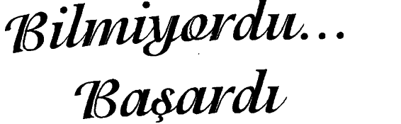
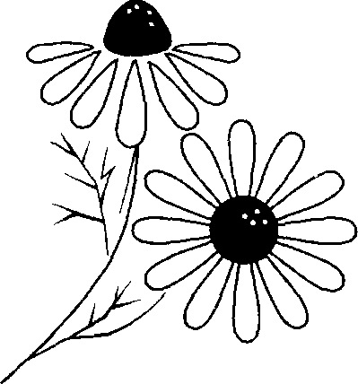
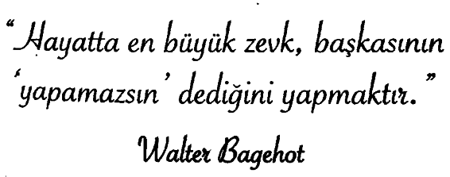

Oğlum Joey doğduğunda bacakları yukarı doğru büküklü, ayaklarının altı karnına değiyordu. O ilk çocuğum olduğu için bu bana yalnızca tuhaf geldi ama gerçekte ne anlam taşıdığını anlamadım. Bunun anlamı Joey’in ayaklarının yumru olduğuydu. Doktorlar, bizi gereken tedavi yapıldıktan sonra onun normal yürüyebileceğine temin ettiler ama büyük olasılıkla hiçbir zaman iyi koşamayacaktı. Joey yaşamının ilk üç yılını ameliyatlarda, kalıplar ve bandajlar içinde geçirdi. Bacaklarına masaj yapılıyordu, alıştırmalar ve çalışmalar sonucunda yedi-sekiz yaşına geldiğinde bu konuda bir sorunu olmamış gibi yürüyordu.
Eğlence parkları ya da hayvanat bahçesi gibi yerlere gittiğimizde uzun mesafe yürürse bacaklarının yorulduğunu ve acıdığını söylüyordu. O zaman durup bir gazoz ya da bir külah dondurma molası veriyor ve gördüklerimiz ve görmemiz gerekenler hakkında konuşuyorduk. Ona bacaklarının neden acıdığını ve neden zayıf olduğunu söylemedik. Doğuştan sahip olduğu bir kusur nedeniyle bunun beklenen bir şey olduğundan söz etmedik. Ona söylemediğimiz için de bunu bilmiyordu.
Oyun oynayan tüm çocuklar gibi bizim çevremizdekiler de bol bol koşuyordu. Joey onları oynarken izler ve elbette o daa ralarına katılıp koşardı. Ona büyük bir olasılıkla diğer çocuklar kadar iyi koşamayacağını da söylemedik. Ona farklı olduğundan söz etmedik. Biz söylemediğimiz için de bunu bilmiyordu.
Yedinci sınıfta kır koşusu grubuna katılmak istedi. Her gün takımla birlikte eğitim görüyordu. Daha çok çalışıyor ve diğerlerinden daha fazla koşuyordu. Başkalarında doğal olarak bulunan yeteneklerin kendisinde doğuştan var olmadığını belki de hissetmişti. Ona, koşabilse bile büyük olasılıkla grubun en arkasında kalacağını söylemedik. Takıma girmeyi ümit etmemesi gerektiğinden ona söz etmedik Takımdaki koşucular, okulun en iyi yedi koşucusuydu. Tüm takım koşuyordu ama yalnızca o yedi çocuğun okula puan kazandırma gücü vardı. Ona büyük olasılıkla takıma giremeyeceğini söylemediğimiz için bunu bilmiyordu.
Joey, her gün günde dört-beş mil koşmayı sürdürdü. Bir gün hiç unutmuyorum, 39 derece ateşi vardı. Evde kalamayacağını çünkü koşu çalışması olduğunu söyledi. Bütün gün onun için endişelendim. Okuldan beni aramalarını ve gelip onu almamı söylemelerini bekliyordum ama arayan olmadı.
Okuldan sonra koşu eğitiminin yapıldığı yere gittim, belki beni görürse çalışmayı bırakmaya karar verir diye düşünüyordum. Okula vardığımda onu kenarı ağaçlarla çevrili uzun bir yolda koşarken buldum. Arabayı yanına sürdüm ve onunla aynı hizaya gelmek için yavaşladım. Ona kendisini nasıl hissettiğini sordum. “İyiyim,” dedi. Yalnızca iki kilometresi kalmıştı. Yüzünden terler akıyordu, gözleri yüksek ateşten dolayı çakmak çakmaktı. Ama yine de dimdikti ve koşmayı sürdürdü. Ona 39 derece ateşle i ki hafta sonra dönemin sondan bir önceki koşusundan bir önceki gün, ‘takım’ koşucularının isimleri açıklandı. Joey listede altıncı sıradaydı. Takıma girmeyi başarmıştı. O zaman yedinci sınıftaydı, takımın diğer üyeleri ise sekizinci sınıf öğrencileriydi. Ona ‘takım’a girmeyi beklememesi gerektiğini hiç söylemedik. Ona bunu yapamayacağını hiç söylemedik. Ona bunu yapamayacağını hiç söylemedik... onun için de bilmiyordu ve yaptı.